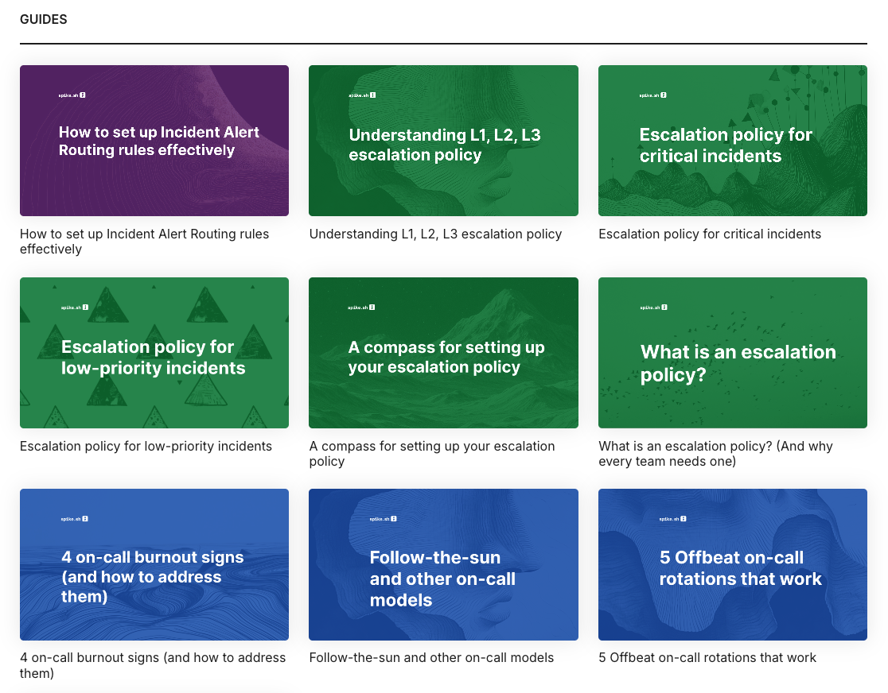
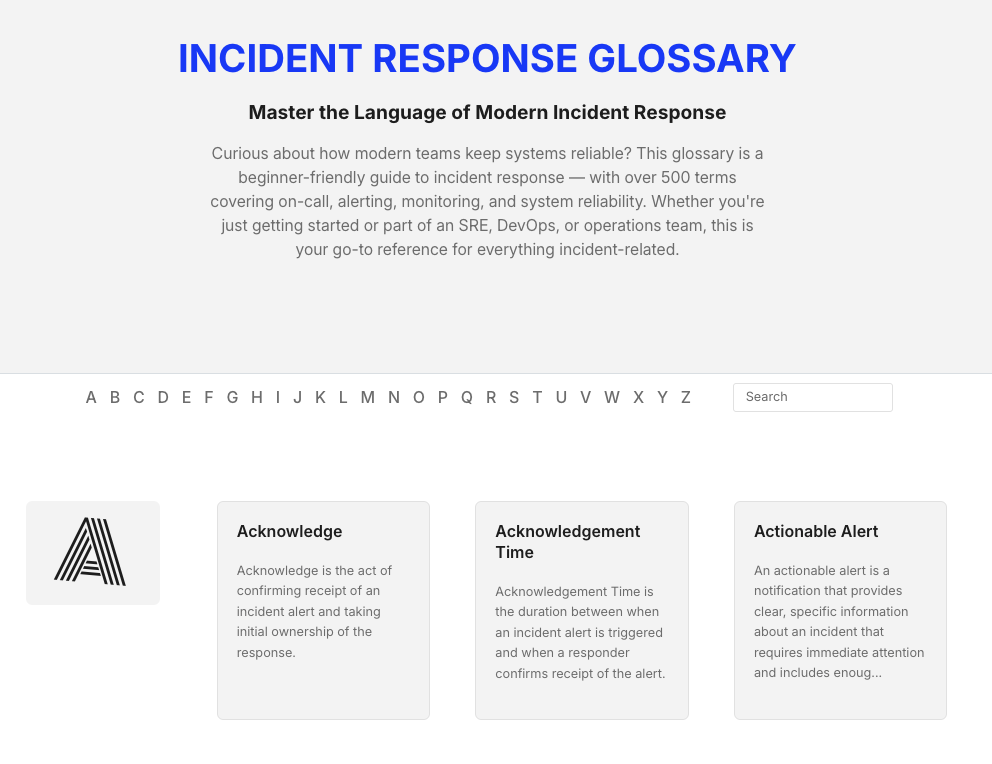
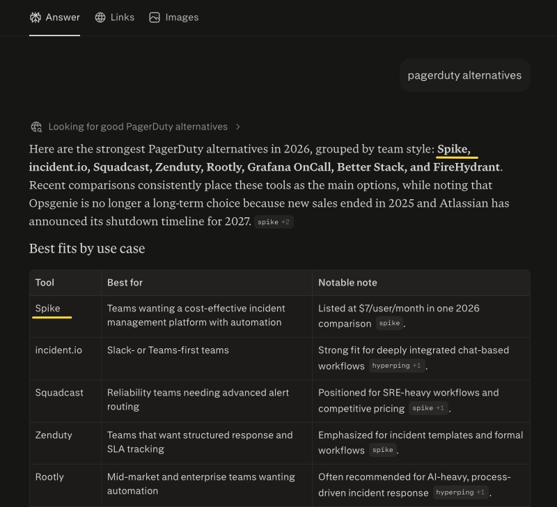

Case Study 03 · Spike · SEO + Topical Authority
How I built Spike's topical authority in the incident management space
Overview
- 108 AI citations across ChatGPT, Perplexity, and Gemini
- 3.5x Blog traffic growth
- 525 Terms in the incident management glossary
- 30 In-depth guides published
Ranking for a few keywords was not enough. I wanted Spike's blog to be the most comprehensive incident management resource on the internet. That meant building assets that went deeper than anything else available in the space.
The guides
Incident response knowledge has always been gated behind ebooks and sales/customer-support calls. And I wanted to change that.
So, I wrote 30 in-depth incident response guides (still writing more). They cover topics like how to structure an escalation policy for critical alerts, how to set up alert routing for a new service, what to do before going on-call, etc.
For each guide, Spike's founder and I got on a call, discussed the topic at length, and debated what actually mattered to our users. I then turned those conversations into the final piece.
All the guides are now available for free at spike.sh/blog/category/guides.

The glossary
The idea came from a frustration. While writing blog posts, I kept using terms like "alert correlation" and wondering if readers understood them. I searched for an existing incident response glossary to link to and found nothing comprehensive.
So I built one.
I gathered over 700 terms, then Spike's founder and I went through every single one together, cutting anything that did not clearly belong. We narrowed 700 down to 525. I wrote each entry using a 14-rule prompt and manually reviewed every single one.
The result: spike.sh/glossary. 525 terms. The most comprehensive incident management reference on the internet.

The results
Spike's blog traffic grew 3.5x over the year.
Beyond traffic, the content established Spike's presence in AI search. Spike's blog posts are now being cited across ChatGPT, Perplexity, Copilot, and Google for incident management queries.

With 108 domain citations, Spike ranks ahead of Squadcast, BetterStack, and AlertOps in AI visibility.